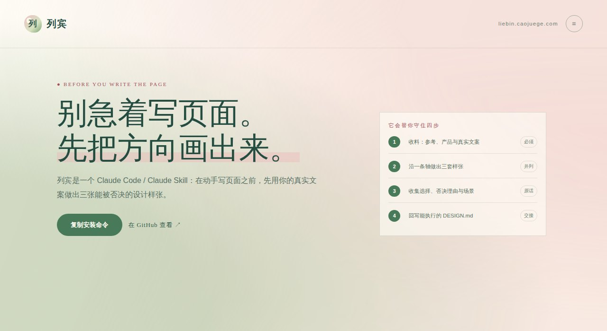
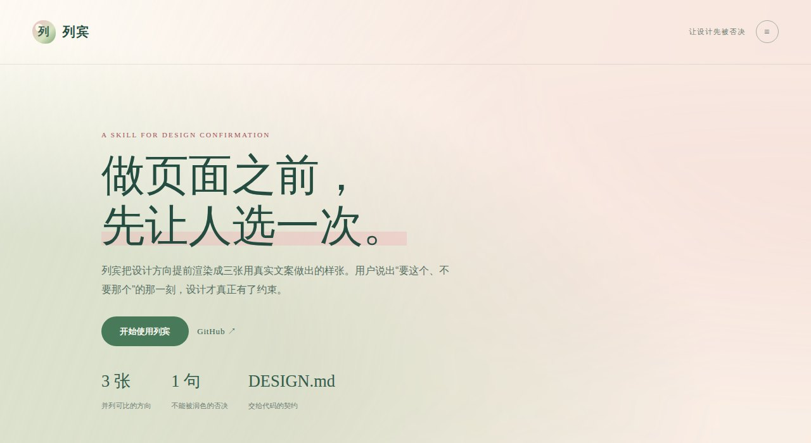
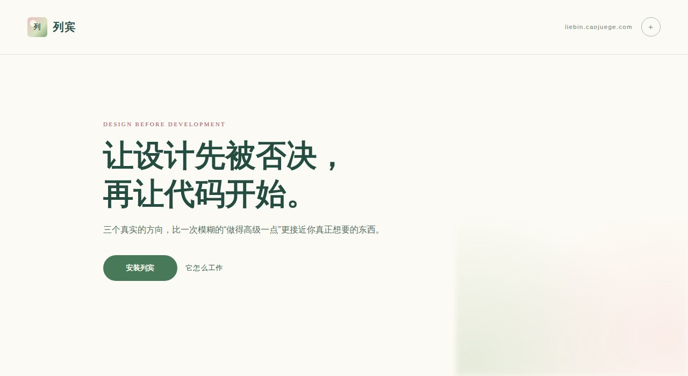

i.
你说不出口的
人很难先说清自己要什么。
“我想要那种高级感。 “嗯，挺好的。 “感觉不太对。「做出来的和我想要的
不是一个东西，
但我说不清哪里不对。」
it isn't ugly — it just isn't what you meant —
列宾是给 Claude Code 这类 AI 编程工具装的一个 skill。动手写页面之前，它先用你自己的真实文案渲染三版设计、每版三屏，并列摆在一张网页上。你挑一版，再说说另外两版哪里不要——你说的那句原话会被逐字写进一份 DESIGN.md，交给 AI 照着去写代码。
选哪个？另外两个，哪里不要？
→and you can't say why —
AI 写页面很快，快到你还没想清楚要什么，页面已经写完了。等看见成品才发现不对，返工的成本已经付掉了。
更难的是，你也说不出到底哪里不对。给你一版，你只能回一句「嗯挺好的」或者「感觉不太对」——两种回答都等于没说。
人很难先说清自己要什么。
“我想要那种高级感。 “嗯，挺好的。 “感觉不太对。但看见东西，就能一眼指出哪里不像。
“这个圆角太软了。 “这个字太挤了。 “要这个，不要那个。列宾只做一件事：把设计方向提前做成一个能被你否决的东西——好让你从「这个圆角太软了」开始说，而不是从「我想要那种高级感」开始猜。
then it hands over —
你喜欢的网站、几张截图，或者只有一句「我想要那种高级感」都行。最要紧的是这一屏上的真实文案——没有它，做出来的样张一定是骗你的。
参考 + 你的真实文案三版只沿一条轴分开：密度、气质或节奏。每版都渲染三屏——首屏、主要操作页，还有没内容时长什么样。第三版故意偏离你给的参考。
三版 × 三屏选中一版，说出另外两版哪里不要，再回答一句：你的用户会在什么状态下打开这个产品。你骂出来的那句原话，就是真正的设计约束。
一句原话选中的方向、你的原话、不许再犯的禁忌，全部写进一份 DESIGN.md，你的原话逐字保留、不做润色。把这份文件丢给 AI，代码才开始写。
DESIGN.md → 交给 AI 写same page you're reading —
给列宾自己做落地页时，视觉先定了下来，剩下的问题只有一个：首页到底该讲多少。于是三版沿同一条轴排开——高、中、低信息密度，各自渲染三屏，并列摆出来让人挑。

首屏同时讲清问题、四步流程和安装路径，给已经在找方法、想立刻判断能不能用的人看。

先把一句主张讲透，流程和安装放到下一层，给第一次认识列宾的人看。

把方法论全藏到后面，只留一个观点和一个安装动作，用来试探首页该不该更像一张宣言。
「另外两个hero传达的信息太少」
2026-08-17 · 选中「碑文」，否决「留白」「静页」
## 8. Do's and Don'ts ### Don'ts - ❌「另外两个hero传达的信息太少」— 用户在 2026-08-17 否决「留白」「静页」的原话；不可把首屏重新做成 只留一句宣言。
这句话原样躺在 DESIGN.md 里，一个字没改。之后每一次生成，都要先过它这一关。
studies first, then the canvas —
画《伏尔加河上的纤夫》之前，列宾在河边住了两个夏天，画满了习作，才动定稿的笔。习作不是热身，是把「我以为的」和「实际是的」对上。
Ilya Repin, 《伏尔加河上的纤夫》 1870–1873 · 131.5 × 281 cm
Russian Museum · images from Wikimedia Commons, public domain
four ways this goes wrong —
参考里的 -2.46px 字距，是 80px 拉丁标题下的 -0.031em。照抄到 48px 中文标题上会挤成一团。列宾一律先转成 em 再迁移，中文标题不用负字距。
「标题标题标题」会让每一版看起来都还行。真实中文文案的长度、语气和断行，才决定一个设计成不成立——所以它一定问你要真话。
一版只能换来「嗯挺好的」或者「感觉不太对」，两种回答都零信息量。三版并列，你才有话可说。
AI 自己写的禁忌永远是「保持一致性」「避免视觉噪音」这类正确的废话，对下一次生成毫无约束力。这一段只能由你来填。
before you install —
不会。列宾只管动笔前那一步：三版样张，加一份 DESIGN.md。写代码是下一步的事——把这份文件交给 Claude Code、Codex 或任何会写代码的 agent 去落地。
能，这是它最常见的入口。什么都没有时，它会把这一句解读成三种不同的气质，让你从里面挑；你手上有网址、有截图、有一份现成的 design md，走的又是另外三条路。
你不需要说出自己要什么。你要做的只是指着三版说「要这个、不要那个」，再补一句哪里不像。它要的就是这个。
不挑 agent。Codex、Cursor、Grok、Openclaw、Kimi Work、WorkBuddy、Hermes、DeepSeek harness——把仓库放进项目里，让它读 SKILL.md 就行。
提取器满大街都是，提得再准也解决不了开头那个问题：你说不清哪里不对。列宾里的提取只是给三版找个起点，粗糙没关系——它马上就要被你否决和修正。
three moves, that's it —
git clone https://github.com/ShaohuaDavidLee/Liebin.git ~/.claude/skills/liebin
重开一个 Claude Code 会话即可生效，或直接 /liebin 调用。Codex、Cursor、Grok、Openclaw、Kimi Work、WorkBuddy、Hermes、DeepSeek harness——把仓库放进项目里，让它读 SKILL.md 就行，不挑 agent。
你喜欢的网址、参考图，还有你要做的东西——填在这儿，打包成一个 zip。里面是一份写好的说明加你的参考图，列宾读它就能开工。
把 zip 解开丢进项目，说一句「读一下 SKILL.md，用列宾走一遍这个任务包」。你会拿到一张单文件网页：三版设计、每版三屏，并列着让你挑。挑完回答两个问题——另外两版哪里不要、你的用户会在什么状态下打开这个产品——它把你的原话逐字写进 DESIGN.md。
DESIGN.md 交出来，列宾的活儿就干完了。它不替你开发产品，接着让任何一个会写代码的 agent 拿这份文件去落地。
the skill stops here, on purpose —